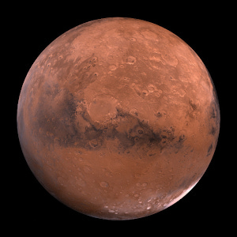

Planeta Marte
Algunos datos sobre el gigante rojo

Marte es el cuarto planeta desde el Sol y es el segundo planeta más
pequeño del sistema solar. Nombrado en honor al dios romano de la
guerra, Marte también se describe a menudo como el "planeta rojo"
debido a su apariencia rojiza. Marte es un planeta terrestre con una
atmósfera delgada compuesta principalmente de dióxido de carbono.
Sobre el planeta Marte
- Diámetro ecuatorial: 6.792 kilometros
- Diámetro polar: 6.752 kilometros
- Masa: 6,39 × 10 ^ 23 kg (0,11 Tierras)
- Lunas: 2 ( Fobos y Deimos )
- Distancia de la órbita: 227,943,824 km (1,38 AU)
- Período de órbita: 687 días (1,9 años)
- Temperatura de la superficie: -87 hasta -5 ° C
Hechos curiosos sobre Marte
- Marte y la Tierra tienen aproximadamente la misma masa terrestre.
- Marte es el hogar de la montaña más alta del sistema solar.
- Solo 18 misiones a Marte han tenido éxito.
Otros planetas
| Nombre |
Diámetro ecuatorial |
Temperatura superficie |
| Tierra |
12.756 km |
-88 a 58ºC |
| Venus |
12104 km |
462ºC |
¿Quieres saber más?